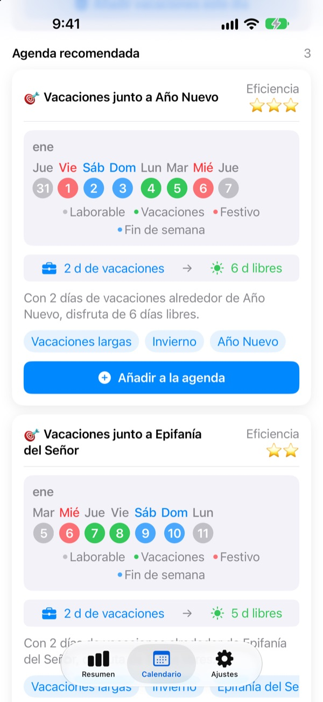
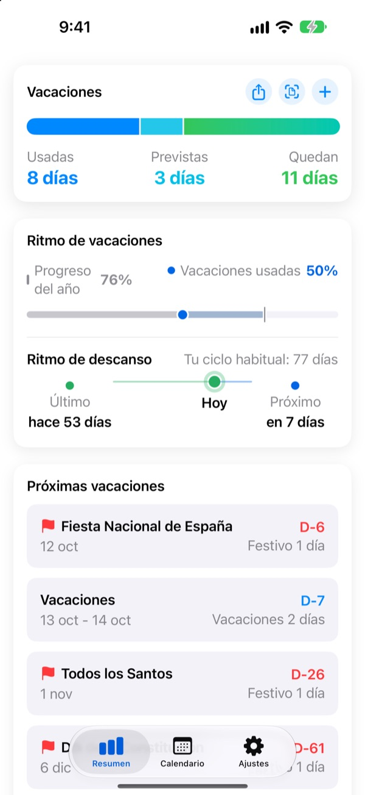
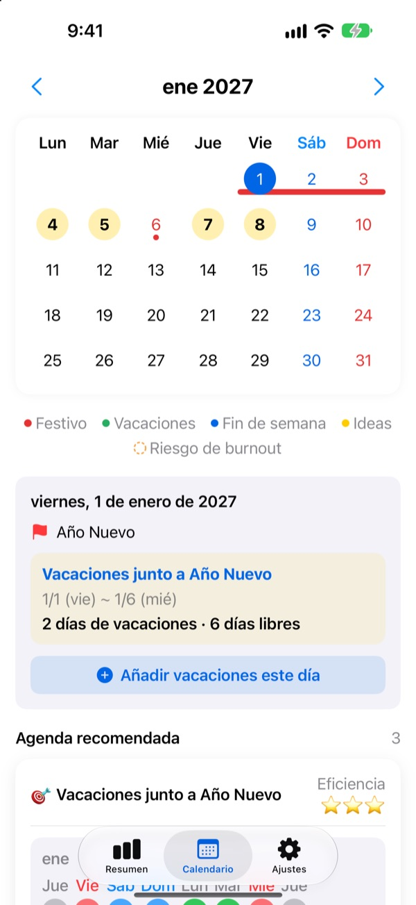
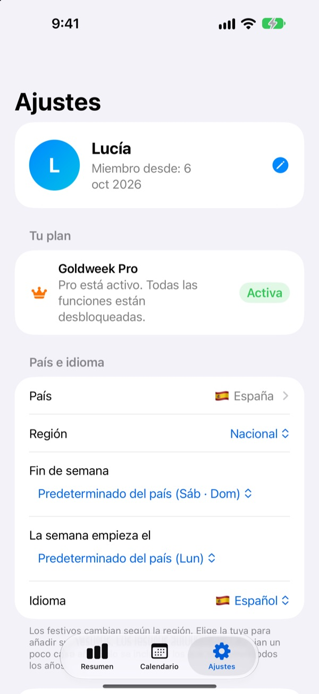

Pocos días de vacaciones,
puentes largos
Goldweek combina festivos y fines de semana y te muestra exactamente qué días pedir para tener el descanso más largo. Se acabó pasar hojas del calendario contando con los dedos.
Descarga gratis. El control de vacaciones y las sugerencias siguen siendo gratis.

¿Hasta dónde llegan tus vacaciones?
Elige cuántos días puedes pedir. Verás los descansos más largos que consigues con ellos alrededor de los próximos festivos.
¿Harto de contar días en el calendario?
El jueves es festivo, ¿pides el viernes? ¿O guardas el día para el puente del mes que viene? Después de pasar muchas hojas acabas cogiendo cualquier día, y en diciembre los días que sobran se pierden. Goldweek hace las cuentas y te enseña los días que más estiran tus vacaciones.
Tus vacaciones de un vistazo
Total, usados y restantes en una sola pantalla. Además ves cuánto del año ha pasado junto a cuántos días has gastado, para saber al momento si estás guardando demasiados.
Los días que te quedan y tus próximas vacaciones aparecen en un widget en la pantalla de inicio.

Pide días desde el calendario
Festivos, vacaciones y puentes sugeridos aparecen en el calendario con su color. Toca una fecha para añadir o editar días libres, también medios días, cuartos de día u horas.
Y puedes importar de una vez las vacaciones pasadas desde una foto de la pantalla de RR. HH.

Tu país, tu forma de trabajar
Festivos de 42 países, de España y Latinoamérica a Europa y Asia. Donde cambian según la comunidad o región, eliges la tuya. ¿Tu país no está? Añade tus propios festivos.
También eliges tus días de fin de semana, el primer día de la semana y si trabajas con horario fijo, a tiempo parcial o por turnos.

Empieza en tres pasos
- 1
Dinos dónde trabajas
Al abrirla por primera vez, elige tu país y cuántos días de vacaciones tienes al año.
- 2
Elige una sugerencia
En la pestaña Calendario verás los puentes sugeridos. Añade los que te gusten.
- 3
Apunta tus días libres
Toca una fecha o importa vacaciones pasadas desde una foto.
Cómo se cuenta
- Día completo
- 1 día de tu saldo
- Medio día
- 0,5 días
- Cuarto de día
- 0,25 días
- Horas
- Según tus horas de trabajo ese día
- Baja, permiso retribuido, viaje de trabajo
- No se descuentan de tu saldo
- Días extra
- Días adicionales como los compensatorios, con fecha de caducidad y aparte (Pro)
Puedes cambiar cuando quieras tus días de vacaciones al año y el mes en que empieza tu año de vacaciones en Ajustes.
Descansar bien es gratis. Planificar, con Plus y Pro.
Gratis
- Días completos, medios, cuartos y horas, con tu saldo restante
- Festivos de 42 países, tus propios festivos y vacaciones escolares
- Todas las sugerencias del año, hasta 3 añadidas
- Avisos de descanso, recordatorios y widget
- Añadir vacaciones con una foto
- Copia en iCloud y calendario compartido en familia
Plus y Pro
- Plus: Planificador anual óptimo
- Plus: Sugerencias ilimitadas, también del año pasado y el próximo
- Plus: Enviar los días libres a tu app de Calendario
- Pro: Todo lo de Plus, días extra, límites anuales y arrastre por tipo
- Pro: Importar el calendario escolar y detección automática de calendario
- Pro: Descanso en familia y aniversarios familiares
Cada nivel está disponible como suscripción anual o como compra única de por vida.
Las suscripciones anuales se renuevan solas si no las cancelas al menos 24 horas antes de que termine el periodo. Gestiónalas cuando quieras en Ajustes > Cuenta de Apple > Suscripciones.
Preguntas frecuentes
Mi saldo de vacaciones no cuadra.
Revisa en Ajustes el mes en que empieza tu año de vacaciones y tus días totales. Los medios días (0,5) y cuartos de día (0,25) se descuentan solos, y los tipos que no cuentan, como bajas, permisos retribuidos o viajes de trabajo, no cambian el saldo. Si sigue sin cuadrar, escríbenos.
Mis vacaciones no aparecen en el calendario.
Las vacaciones canceladas no se muestran en el calendario. Revisa el estado de la entrada en Gestión de vacaciones. Actualizar a la última versión también puede ayudar.
¿Cómo añado días extra?
Toca + en la pestaña Resumen para abrir Gestión de vacaciones y usa la sección Días extra de abajo. Elige un tipo (compensatorio, premio, descanso…), indica los días y, si quieres, una fecha de caducidad. Los días extra se llevan aparte de tus vacaciones normales.
He pagado, pero no se ha desbloqueado nada.
Toca Restaurar compra al final de la pestaña Ajustes. La compra se restaura con la cuenta de Apple con la que has iniciado sesión en el App Store. Si no funciona, escríbenos.
¿Pierdo mis datos si borro la app?
Los datos se guardan en el dispositivo, así que al borrar la app desaparecen. Activa la copia de seguridad en iCloud para tener una copia que puedas restaurar.
¿Puedo añadir mis propios festivos u ocultar alguno?
Sí. En Festivos y vacaciones escolares, dentro de Ajustes, puedes añadir tus festivos u ocultar los que vienen por defecto.
¿Qué países incluye?
Goldweek incluye los festivos de 42 países. Elige tu país en Ajustes (y tu comunidad o región, donde cambian) y el calendario se actualiza al momento. Si el tuyo no está, añade sus festivos a mano o pídenoslo desde la app.
¿Dónde se guardan mis datos?
Lo que introduces se queda en tu dispositivo o en tu propio iCloud. Solo recibimos estadísticas de uso anónimas, informes de errores anónimos y los comentarios que decidas enviarnos.
Para cualquier cosa que no esté arriba, ideas o errores, escribe a leeo@kakao.com. Solemos responder en uno o dos días laborables.